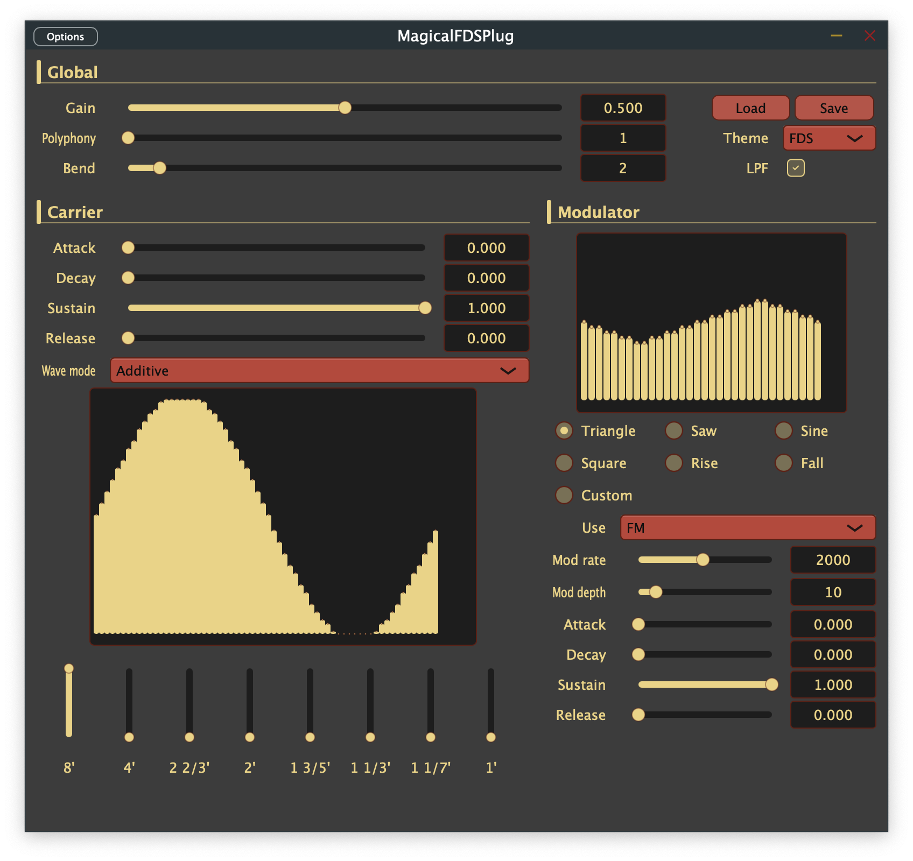
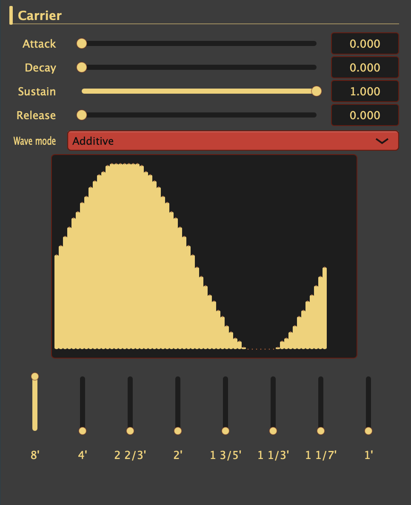
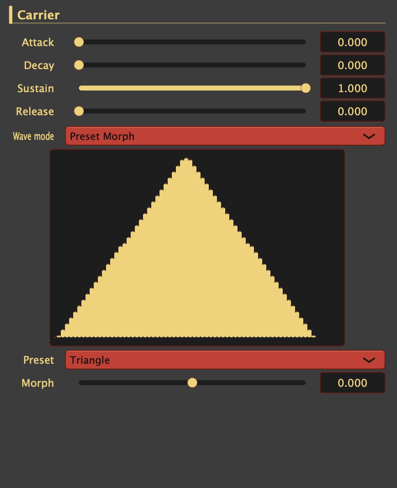
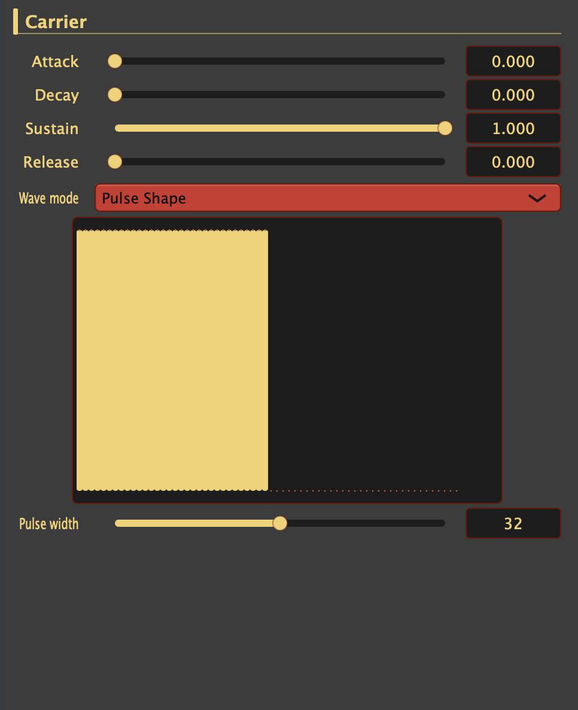
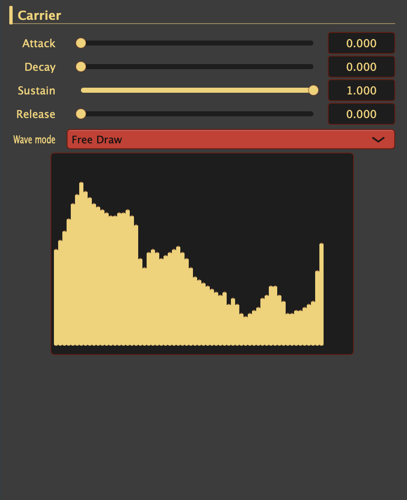
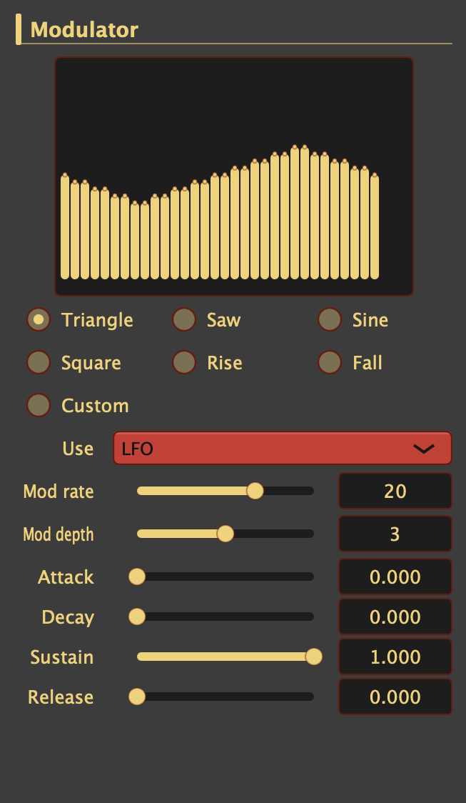
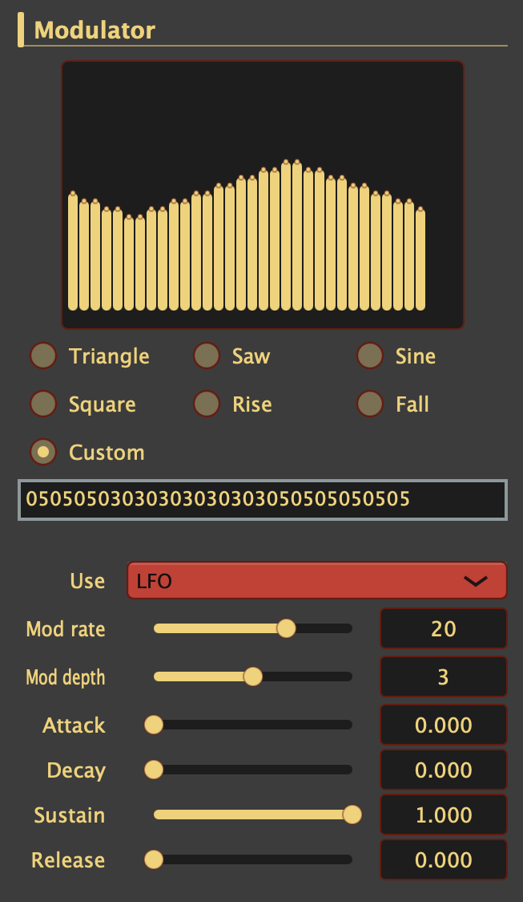

by Yokemura(YMCK) http://www.ymck.net/
Magical FDS Plugとは
Magical FDS Plug は、8bit 時代の「ディスクシステム音源」（FDS 音源）の音色を再現するソフトウェア・シンセサイザーです。 Audio Units および VST3 をサポートする Mac / Windows のホストアプリケーションで、プラグインとして利用できます。
FDS 音源は、64 サンプルの波形メモリ（キャリア）を、別の 32 ステップの命令列（モジュレータ）で変調するという独特の仕組みを持ちます。 自由度は高い一方、実機では波形データを直接編集する必要があり、設定が難しい面もありました。 本プラグインでは、その自由度を保ちつつ、加算合成やプリセット変形など、ロジカルな方法で波形を組み立てられるインターフェースを提供しています。
特徴
- キャリア＋モジュレータの 2 系統 — 聴こえる基本波形（キャリア）と、それを変える側（モジュレータ）を独立に設計できます
- 4 通りのキャリア波形編集 — 加算合成／プリセット変形／パルス変形／自由描画
- モジュレータ波形 6 種＋ Custom — 三角波・のこぎり波・サイン波・矩形波・上昇・下降、および 32 ステップの opcode 列をテキスト入力
- 変調レート LFO / FM / OFF — ゆっくり揺らす LFO から、音色を変える FM まで使い分け
- キャリア・モジュレータそれぞれ ADSR エンベロープ — Magical 8bit Plug 2 と同様の操作感
- 実機近似の出力ローパス（約 2 kHz） — オン／オフ切替（デフォルト：オン）
- Magical 8bit Plug 2 に準拠した UI — カラーテーマ 7 種類、セクション構成、ADSR の操作感
キャリアとモジュレータ
| キャリア | 実際に聴こえる基本の波形 | 64 サンプル・64 段階（6 bit）の波形テーブル。加算合成・プリセット変形・パルス・自由描画の 4 通りで作れます |
| モジュレータ | キャリアを変える側の波形 | 32 ステップの命令列として動作。三角波など 6 種類から選び、レートと深さで「揺らす」か「音色を変える」かを調整します |
開発について
Magical FDS Plug はオープンソースですので、欲しい機能や修正があれば、ご自身で改良することが可能です。 もちろん、それをフィードバックしていただければ今後のバージョンに生かさせていただきます。 GitHub レポジトリはこちらです。
また、ドネーションも受け付けておりますので、コーディング以外でサポートしていただける方はぜひこちらをよろしくお願いします。
インストール方法
プラグイン本体を、OS またはホストアプリケーションで指定されたフォルダへとコピーします。 一般的なインストール先は以下の通りです。実際のインストール場所は環境によって異なりますので、お使いの OS や DAW の説明をご参照ください。
特に最近では DAW 含むアプリは多様化していますので、それぞれについてプラグイン使用方法について把握しきれておりませんし、実質不可能です。 ですのでご質問は私ではなく、Google 先生か、またはお使いのソフトのユーザコミュニティなどにお問い合わせいただければと思います。 基本的なインストール方法の問題については、お問い合わせいただいてもお答えいたしませんのであらかじめご了承ください。
| Mac | AudioUnits | .component | /Library/Audio/Plug-ins/Components |
| VST3 | .vst3 | /Library/Audio/Plug-ins/VST3 | |
| Windows | VST3 | .vst3 | C:\Program Files\Common Files\VST3 |
使い方
Magical FDS Plug の UI は、Global（全体）・Carrier（キャリア）・Modulator（モジュレータ）の 3 セクションに分かれています。 Global が上部にあり、その下に Carrier と Modulator が横並び（横幅比 3:2）で配置されます。 キャリア波形の編集方法や、モジュレータの Use（LFO/FM/OFF）の選択によって、表示されるコントロールが変わります。 目的のパラメータが見当たらない場合は、これらの選択状態を確認してください。

- ①Global セクション
- 全体設定（ゲイン、同時発音数、ベンドレンジ、テーマ、フィルタ、プリセット保存／読込）を行うセクションです。
- ②Carrier セクション
- キャリアの ADSR と波形編集を行うセクションです。Carrier Wave Mode の選択によってコントロールの内容が変わります。
- ③Modulator セクション
- モジュレータ波形、変調レート／深さ、ADSR を設定するセクションです。Use の選択によって Rate / Depth の表示が変わります。
Global セクション
画面上部の Global セクションには、プラグイン全体に関わる設定がまとまっています（上図 ①）。
- Gain
- プラグイン出力のマスタゲイン（0〜1）。パルス波などは聞こえ方が大きくなりがちなので、他の楽器とのバランス調整に使います。デフォルト 0.5。
- Polyphony
- 同時発音数（1〜32）。デフォルト 1。
- Bend
- ピッチベンドの振れ幅（半音数、0〜24）。ベンドホイールを最大まで振ったときの変化量です。デフォルト 2（全音）。
- Load / Save
- プラグインの全パラメータを XML ファイルとして保存・読み込みします。自作音色のバックアップや共有に使えます。
- Theme
- UI のカラーテーマ。FDS / YMCK / YMCK Dark / Japan / Worldwide / Monotone / Mono Dark から選択できます。
- LPF
- 実機に近い約 2 kHz のローパスフィルタのオン／オフ。デフォルトはオン。カットオフや Q 値の調整はできません。
Carrier セクション
キャリアは、実際に聴こえる 64 サンプル・64 段階（6 bit）の波形です（上図 ②）。
エンベロープ
音量の時間変化を 4 つのパラメータで指定します。Magical 8bit Plug 2 と同様の操作感です。
- Carrier Attack
- 鍵盤を押してから音量が最大に達するまでの時間（秒、0〜5）。
- Carrier Decay
- 最大音量に達してから Sustain レベルまで減衰する時間（秒、0〜5）。
- Carrier Sustain
- Decay 後、鍵盤を離すまで維持される音量（0〜1）。
- Carrier Release
- 鍵盤を離した後、音量が 0 になるまでの時間（秒、0〜5）。
Carrier Wave Mode
波形の作り方を選びます。選択に応じてコントロールパートの内容が切り替わります。
| Additive | 8 本のドローバーで倍音を混ぜ合わせる |
| Preset Morph | 三角波・のこぎり波・サイン波をベースに変形する |
| Pulse Shape | 矩形波のパルス幅を変更する |
| Free Draw | 64 点を直接描画する |
Additive / Preset Morph / Pulse Shape の設定値は、モードを切り替えても内部に保持されます。 別モードを試したあと元に戻すと、以前の値が復元されます。Free Draw のみ例外で、スライダーの値がそのまま発音用パラメータになります。
波形表示パート
64 本の縦スライダーで波形を表示します。Free Draw 以外は読み取り専用で、コントロールの変更に応じて更新されます。 Free Draw では各スライダーを直接操作できます（各点 0〜63、6 bit）。
Additive（加算合成）

電子オルガンのドローバー風に、次の 8 本の倍音スライダーを横並びで配置しています。
8', 4', 2 2/3', 2', 1 3/5', 1 1/3', 1 1/7', 1'
各スライダー（0〜1）の振幅で正弦波を合成し、64 サンプルに量子化した波形を生成します。振幅が 1 を超える場合は自動的に正規化されます。
Preset Morph（プリセット変形）

- Preset
- Triangle / Sawtooth / Sine からベース波形を選択します。
- Morph
- 中央（0）で無変形。右に動かすと圧縮（小さい振幅を相対的に強調）、左に動かすと伸長（小さい振幅をさらに下げる）。内部的にはべき乗変形です。
Pulse Shape（パルス変形）

- Pulse width
- 矩形波の High 部分の幅（1〜63 ステップ、64 サンプル中）。デフォルト 32（50% 付近）。Hi/Lo レベルは 63/0 です。
Free Draw（自由描画）

コントロールパートは表示されません。波形表示パートの 64 本スライダーを直接操作して波形を指定します。
Modulator セクション
モジュレータは、FDS 実機と同様 32 ステップの 3 bit 命令列として動作し、キャリア波形の読み出し速度（＝音色）を変調します（上図 ③）。
波形プレビューと波形選択
32 点の累積波形を表示します（読み取り専用）。Triangle / Saw / Sine / Square / Rise / Fall / Custom から選択します。 プリセット 6 種は、実機 opcode 列に相当する命令列を内部に保持しています。Custom 選択時は opcode テキスト欄が表示されます。
Use / Rate / Depth
変調レートの使い方を Use で切り替えます。
| LFO | ゆっくり揺らす（ビブラート的）。Rate 1〜30、Depth 1〜5 |
| FM | 音色を変える（FM 的）。Rate 30〜4095、Depth 0〜63 |
| OFF | 変調なし。Rate / Depth は非表示 |
- Rate
- 変調の周期。実際の Hz とは単純な比例ではありませんが、値を大きくするほど速く、FM 的な効果が強まります。デフォルト 256（FM モード）。
- Depth
- 変調の深さ。モジュレータ ADSR の出力と掛け合わせ、FDS 実機の mod gain（0〜63）相当として使われます。
LFO モード

Use を LFO にすると、Rate と Depth のレンジが LFO 向け（Rate 1〜30、Depth 1〜5）に制限されます。
モジュレータエンベロープ
変調量の時間変化（ADSR）です。キャリア ADSR と同様、秒と相対レベルで指定します。
- Mod Attack
- 鍵盤を押してから変調量が最大に達するまでの時間。
- Mod Decay
- 最大変調量から Sustain レベルまで減衰する時間。
- Mod Sustain
- Decay 後、鍵盤を離すまで維持される変調量。
- Mod Release
- 鍵盤を離した後、変調量が 0 になるまでの時間。
Custom opcode

Custom 選択時、32 桁の数字（各 0〜7）を 1 行で入力します。空白は無視されます。全角数字は使用できません。 有効な 32 桁が入力確定した時点で、カスタム opcode 列が反映されます。 プリセット波形（Triangle など）を選んだあと Custom に切り替えると、直前のプリセットを起点に編集を始められます。
各数字の意味（FDS 実機準拠）
| 数字 | 動作 |
| 0 | 変化なし（ホールド） |
| 1 | カウンタ +1 |
| 2 | カウンタ +2 |
| 3 | カウンタ +4 |
| 4 | カウンタを 0 にリセット |
| 5 | カウンタ −4 |
| 6 | カウンタ −2 |
| 7 | カウンタ −1 |
カウンタは −64〜63 の範囲でラップします。32 ステップを 1 周すると、同じ周期で繰り返します。
入力例
三角波プリセット相当の opcode 列：
0505050303030303030305050505
ライセンス
本プラグインは GPL v3 ライセンスにて配布しています。ソースコードを開示しておりますので、GPL に従い複製、頒布および改変することができます。
ドネーション
開発へのご支援は、ソースコードの共有を通じた直接のご支援のほか、ドネーションを受け付けております。ご協力いただける方はぜひよろしくお願いします。
ドネーションはこちらのページからお申込みいただけます。